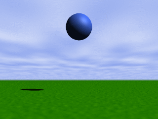
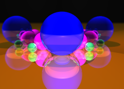
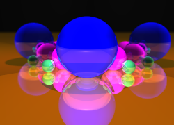

SILLY supports animation and motion blur via range expressions.
|  |  |
Interpolation
Range expressions in SILLY are created with the special var keyword. You must use this keyword as you would use an arithmetic function. It requires at least two parameters, and all of its parameters must belong to the same type.
camera
perspective(
location: var(-10^Z, -5^Z),
target: ^0,
up: var(^Y, ^Y, ^Y + 0.1^X), // Three parameters in var!
angle: var(60, 45),
width: 800,
height: 600);
We have specified three ranges for our camera. First, the camera travels from its initial position -10^Z to -5^Z. At the same time, the lens angle is reduced from 60 degrees to 45, which is another zooming technique.
While the camera is traveling, we change the up vector, rotating the camera a small angle towards the right side. In this case, the var function has three parameters, for dividing the range in two equal length parts. In the first interval, the up vector is not touched, and all the rotation is performed in the second half of the camera path. You can use as many parameters in a var range as you need.
You can even control how time intervals are divided by using a time specifier inside the var parameter list:
var(^Y, ^Y, 0.4: ^Y + 0.1^X)
In this case, the up vector changes at 0.4. A time specifier is not needed for the first and the last parameter, since they are fixed at 0.0 and 0.1, respectively.
This technique is easier than the common alternative: a explicit clock variable. However, if you don't feel easy with ranges, you can still use the clock predefined macro, which has been defined like this:
set clock = var(0.0, 0.1);
Setting a clock value
There are several techniques for changing the internal clock value. You can control the clock's value from the parameters panel, always docked at the left edge of the main window:
Also, clock and range expressions are frequently used with the Animation form:
Finally, if something changes in a scene, you can render it using the Motion Blur form:

This form generates and combine several shots from the same scene, but with slightly different clock values.
Camera rotation
Frequently, when designing a scene, you need to watch its objects from several points. You could solve this problem using ranges in the camera's location. The needed expression, however, is fairly complex.
That's the reason we have included the Rotate camera checkbox in the parameters panel. When this option is checked, the location of the camera is rotated clockwise around the camera's target, according to the clock's value when the scene was compiled. The clock's value is interpreted as a rotation angle between 0 and 360. The Rotate camera checkbox displays the current value as a hint, when the mouse is moved over the checkbox:
These two images were generated from the same scene, rotating the camera's location in a small amount:
|  |  |
See also
Home | Small Instantiation Language | Basic syntax | Data types | Expressions | Macros | Rendering